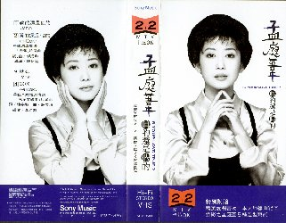

| 前のＣＤ | タイトル一覧 |
| １９９５年４月 | 眞的還是假的－ IS YOUR LOVE TRUE ? － | ＳＤＶ－９５０１ |
|---|---|---|
|  | 新力音楽（Sony Music） | |
| ||
日本の篠山紀信氏の撮影した５種類の写真が付録として付いているとの記述がありました。 この付録につられて、ビデオを購入しましたが、ブロマイド風のものではなくて、 １枚の大きな歌詞カードに、１インチ四方の写真が５種類印刷して有るだけでした。 ５種類の写真には、それぞれ「純真」「優雅」「浪漫」「温柔」「性感」 のタイトルがつけられていました。 孟庭葦（亞亞チャン）は、このアルバムの時に、東京の赤坂に来られていたようです。 （孟庭葦の写真集は有るのでしょうか？・・・私は、ほしいと思っています。） | ||